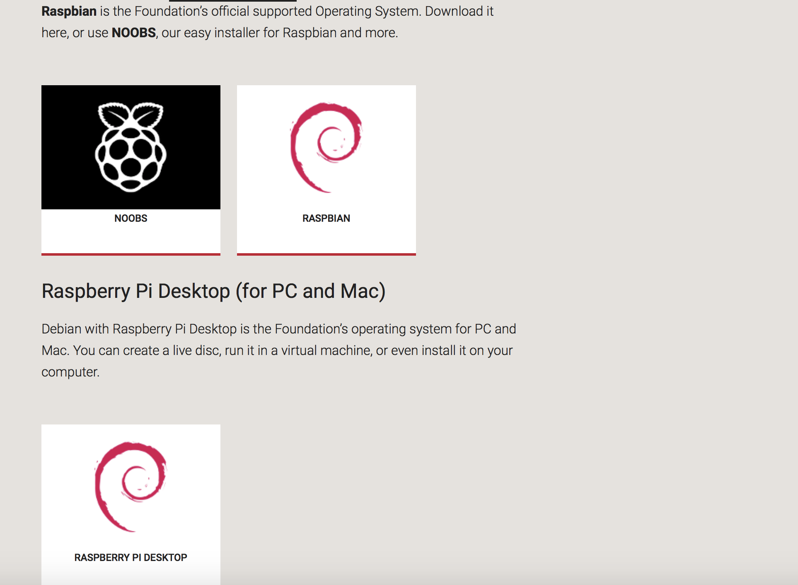
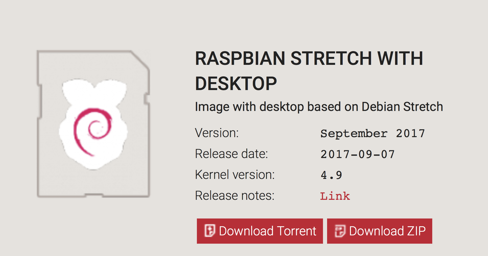
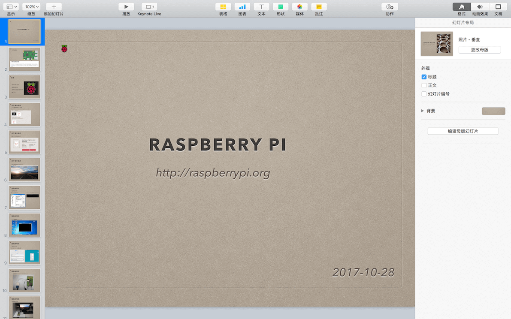
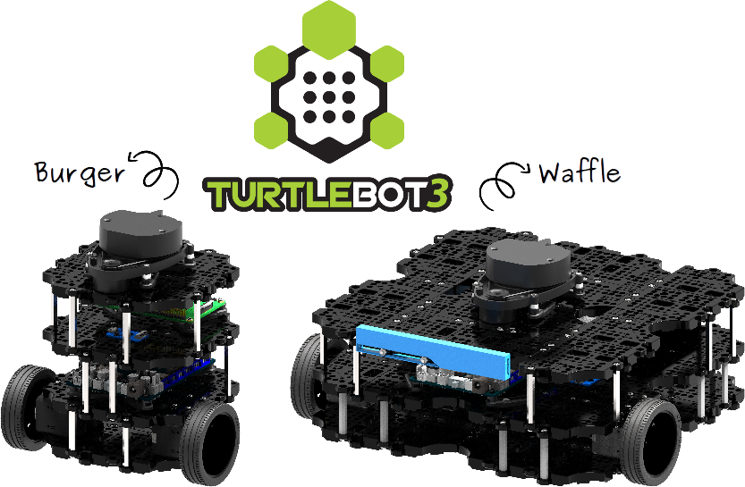

背景
我接触树莓派已有几个月的时间了，一直在使用树莓派作为一个平台学习去其他方面的知识，可以很确定的说，我的 Linux 学习之路，是树莓派带我入的门。但是现在我正在使用的操作系统为 Mac OX ，所以树莓派被我闲置了有一段时间了。
树莓派对我的帮助是巨大的，所以，我特意写这一篇博客，用来记录并保存树莓派的进度。希望几个月或者更长的时间过后再次拿起树莓派，我可以不用在网上找教程，而是复习自己的笔记，就可以从现在停留的地方继续的开始；又或者是，通过看一遍自己的笔记，并结合网上的教程，让我能在很少的时间里快速的想起自己在树莓派上曾经做过了什么、遇到的问题、解决的办法等等。
学习的网站
关于树莓派的学习网站。我在玩树莓派的时候不知道任何有关树莓派的论坛，大多是在浏览器上直接进行搜索，但是从我的亲身经历来看，这并不是一个好的入坑方式。所以，我记录下了一些对我帮助很大的网站。
- 官方网站 - https://www.raspberrypi.org
- 树莓派实验室 - http://shumeipai.nxez.com
- CSDN http://www.csdn.net
以上三个网站是我学习树莓派的过程中使用得最多的网站。
我首推的是树莓派的官方网站，官方网站上拥有更加权威的教程，若是英语能力强，我强烈建议阅读官方提供的指导手册，这比看博客要好多。
然后是「树莓派实验室」，「树莓派实验室」是一个关于树莓派的中文资讯站，提供丰富的树莓派使用教程和DIY资讯。根据它提供的教程，可以很快的完成树莓派环境的搭建，还可以根据里面的博文教程，使用树莓派完成很多小项目，而且，里面还很贴心的提供给使用者可能会需要到的软件了链接，比如 PUTTY、IP SCANNER、SD格式化工具等等。
其次是 CSDN，它是中国最大的 IT 社区和服务平台，里面有很多高质量的博客、教程、资源，可以助你一臂之力。
目录
- 树莓派的简介
- 准备工作
- 安装操作系统
- 登录到树莓派
- 使用树莓派做些事
树莓派的简介

树莓派（Raspberry Pi）是一款由英国的树莓派基金会开发的、信用卡大小的单板电脑，最初目的是促进及提升在校学生的基础计算机教育水平，但由于其价格低廉，并且已经有大量操作系统（主要是 Linux）被移植到了树莓派上，越来越多的技术人员及爱好者都开始使用树莓派来开发有用或有趣的软件硬件系统。
准备工作
以下是我在树莓派的学习过程中所使用到的东西：
-
树莓派
-
SD 卡
-
读卡器
-
网线
-
HDMI 转 VGA
-
键盘和鼠标
安装操作系统
树莓派的官方网站提供了针对树莓派的操作系统，如下：

关于树莓派的操作系统可有不同的选择，我选择的是以下这个带图形界面的：

安装的过程很简单，安装教程很容易找得到。我使用的是一台 Windows7 的台式点脑，使用 [Win32DiskImager] 将下载好的操作系统镜像写入 SD 卡，再将 SD 卡插入树莓派，通电启动即可。
登录树莓派
操作系统安装完毕后，如何登录自己的树莓派呢？方法有两种：
- 使用 HDMI 转 VGA 连接外接显示器
- 通过 SSH 或 VNG 远程登录
第一种方法很简单，也最直接，但是成本过高。在没有转接线和显示器的情况下，可以使用第二种方法。通过 SSH 远程登录，SSH 远程登录需要知道树莓派的 IP 地址，我使用 [Advanced IP Scanner] 获取到树莓派的 IP。
使用树莓派做些事
以下是我使用树莓派做的一个小工程：
- GPIO
我使用树莓派的 GPIO 外接一个小风扇，并通过一个Python 脚本开机自启、后台执行，实现对树莓派芯片的控温。只须一行代码就可读取到树莓派芯片的温度，根据此时的芯片温度判断是否开启／关闭风扇。
- USB 摄像头
我尝试安装 OpenCV，并使用摄像头做监控、识别，但是 OpenCV 在编译安装的时候频频报错，安装过程持续了好几个晚上，每次我执行 make 指令后，便回寝室休息，第二天早上再查看安装状况，可是结果总是不尽人意。目前只能监控、拍照，还无法识别。
我用到的软件
以下的这些软件是我在学习树莓派时使用到的工具：
最后
关于树莓派的第一阶段学习我做了一个总结性的 PPT ，主要是一些我遇到的问题和解决方法。托管在了 GitHub 上。

2017-12-22更：
树莓派的 OpenCV 已经安装完成，环境配置问题已得到解决。下载源码编译安装，出现了报错，几经尝试也无法得到解决，所以使用了 apt-get 的方式安装，很顺利。
最近实验室购买了一台 TURTLEBOT3（http://www.turtlebot.com）。TurtleBot是一个低成本的个人机器人工具包，具有开源软件。 TurtleBot 是由 Melonee Wise 和 Tully Foote 于 2010 年 11 月由 Willow Garage 创建的。 通过TurtleBot，可以建立一个机器人，可以在房子周围导航，观看 3D，并有足够的力量来创造令人兴奋的应用程序。我对 TURTLEBOT3 上搭载的树莓派很感兴趣，目前在学习 TURTLEBOT3 的图像处理相关方面内容。

SBC : Respberry Pi 3
MCU : OpenCR
目前环境基本配置完成，Ubuntu16.04、ROS。